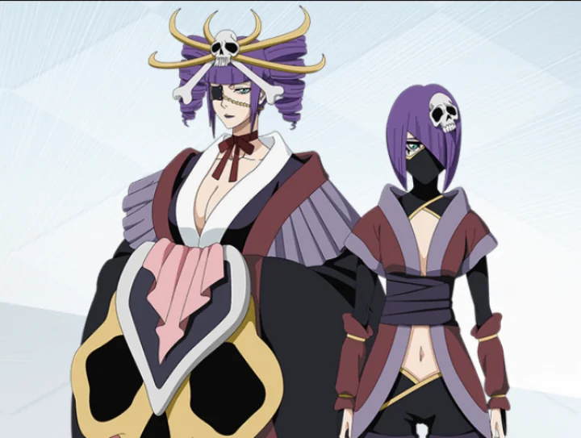
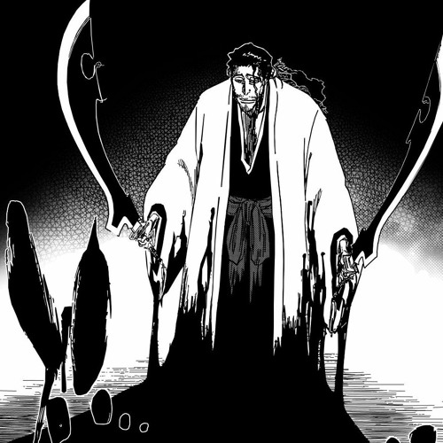
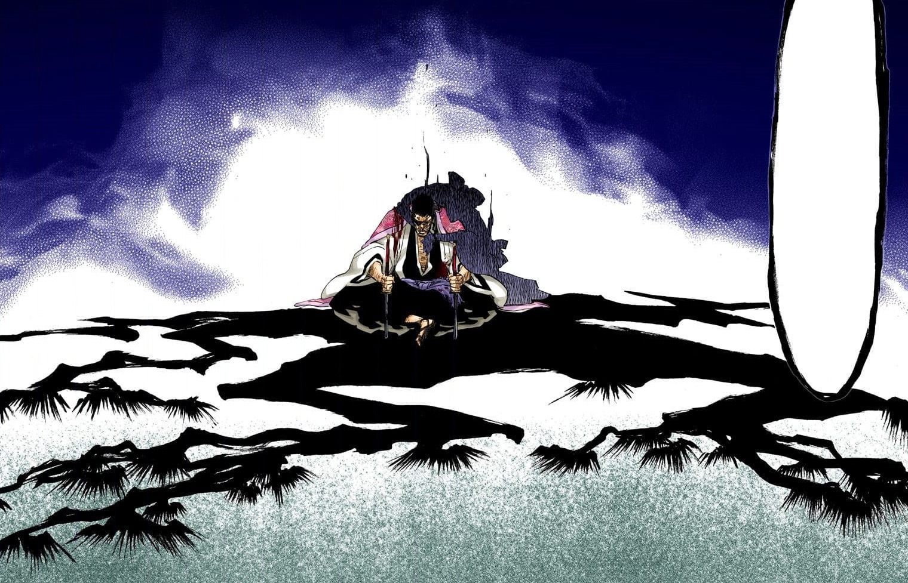

Shunsui Kyōraku é um personagem central na série de mangá e anime "Bleach", criada por Tite
Kubo.
Ele é o capitão da 8ª Divisão da Gotei 13 e, ao longo da série, se destaca não apenas por
suas
habilidades de combate, mas também por sua personalidade carismática e despreocupado
Kyōraku é conhecido por seu estilo relaxado e brincalhão, frequentemente usando um chapéu
largo
e
vestindo um kimono. Sua aparência descontraída contrasta com sua verdadeira força e
determinação
em
batalhas. Ele é um combatente excepcional, capaz de utilizar habilidades poderosas e um
Shikai
único
chamado "Katen Kyōkotsu", que permite manipular a sorte e o destino nas batalhas.
Um dos traços mais marcantes de Shunsui é sua profunda compreensão da natureza humana e sua
capacidade de se conectar com os outros. Ele demonstra uma grande sabedoria e muitas vezes
reflete
sobre temas como a vida e a morte, a luta e a paz. Sua relação com outros personagens,
especialmente
com Nanao Ise, sua tenente, é marcada por um equilíbrio entre camaradagem e respeito.
Ao longo da série, Shunsui também assume papéis mais sérios e de liderança, especialmente
durante a
saga da Guerra Sangrenta dos Mil Anos, onde sua força e inteligência são cruciais para
enfrentar
os
desafios que surgem.
Katen Kyōksu

Sua Zanpakutō
A zanpakutō de Shunsui Kyōraku, chamada Katen Kyōkotsu, é uma das mais intrigantes e complexas
da
série
"Bleach", criada por Tite Kubo. Diferente de muitas outras zanpakutō, Katen Kyōkotsu possui uma
dualidade única, refletindo a personalidade descontraída e astuta de Shunsui.
Ela se manifesta em duas entidades, uma que representa a verdadeira natureza de sua
Zanpakutō(Bankai)
aparecendo como uma bela dama que usa um tapa olho e a outra como uma criança que representa sua
shikai.
Sua complexidade vem de que as duas são mãe e filha, tendo personalidades e poderes
completamente
distintos,
porem com a mesma essência fatal.
Shikai

Sua shikai representa a natureza infantil de sua Zampakuto, ela ama brincar e as brincadeiras
acabam
apenas ao fim da vida de seu oponente.
Katen Kyōkotsu é capaz de tranformar as regras de brincadeiras tradicionais japonesas em
realidade.
Algumas delas são:
Kageoni
(影 鬼, Demônio da sombra): A regra deste jogo é que quem quer que tenha sua sombra pisado
"perde". O jogo em si permite que os competidores manipulem as sombras em sua vantagem. Por
exemplo,
Shunsui demonstrou a habilidade de se esconder nas sombras ao usar esta técnica, e ele
também
pode
controlar as sombras, usando-as para atacar um oponente atacando a sombra em que ele está no
momento. Além disso, Shunsui pode fazer vários clones de sombra de si mesmo que podem atacar
seu
oponente de vários ângulos.
Bushōgoma
(不 精 独 楽, Pião preguiçoso): Shunsui gira com as duas lâminas voltadas para direções opostas,
criando
grandes lâminas de vento que disparam em direção a um oponente de Katen Kyōkotsu. As lâminas
de
vento se unem, formando um círculo giratório de vento que, ao entrar em contato com um alvo,
envolve
o alvo com uma intensidade semelhante à de um tornado. O ataque não é apenas perigoso, mas
pode
desorientar um oponente preso dentro dele. A técnica é poderosa o suficiente para
neutralizar as
explosões de Cero de alta potência. O jogo que esta técnica representa é um jogo de pião.
Bankai

Katen Kyōkotsu: Karamatsu Shinjū é sua bankai, sendo uma das mais poderosas e fatais de toda a
obra
tendo a capacidade de fazer peças teatrais se tornarem realidade ao criar um dominio de ação em
uma
area extensa.
Assim como sua shikai ela provavelmente consegue trabalhar com varias versões, mas uma unica foi
apresentada
na obra:
The Love Suicides at Sonezaki
Ichidanme: Tameraikizu no Wakachiai (一段 目 躊躇 疵 分合, Primeiro Ato: Hesitação e Distribuição
das
Feridas ): Quaisquer feridas que Shunsui ou seu oponente infligem no corpo um do outro irão
emergir em seu corpo também, como se fossem compartilhadas. Shunsui compara isso com a
historia
de um homem que compartilha suas feridas, tanto físicas quanto psicológicas com a sua
parceira,
mas não pode morrer delas.
Nidanme: Zanki no Shitone (二段 目 慚愧 の 褥, Segundo Ato: O Travesseiro da Vergonha ): O oponente
de
Shunsui adquire um doença de sangue mortal, onde pontos pretos aparecem por todo o corpo do
oponente, fazendo-o sangrar profundamente por todos os orifícios. Shunsui compara isso a
historia do homem, que sente vergonha depois de ferir sua parceira, fazendo com que ele
desmaie
de vergonha e adquira uma doença incurável.
Sandanme: Dangyo no Fuchi (三 段 目 断 魚 淵, Terceiro Ato: O Abismo Cortante ): Shunsui e seu
oponente, ficam imersos em um mar infinito e permanecem dentro dele até que a Reiatsu de um
deles se esgote e ele se afogue. Na história de Shunsui, o homem e a sua parceira decidem se
suicidar, se lançando em um abismo de águas profundas. O oponente deve seguir o roteiro para
sobreviver.
Shime no Dan: Itokiribasami Chizome no Nodobue (〆 の 段 糸 切 鋏 血染 喉, Ato Final: Tesouras de
cortar
fio sobre uma garganta manchada de sangue ): Depois de embainhar suas espadas, Shunsui
enrola um
fio branco em volta da garganta de seu oponente várias vezes antes de puxá-lo, deixando um
corte
profundo em sua garganta que se expande antes de explodir sua cabeça. Por fim, na historia
de
Shunsui, o homem arrependido, tenta emergir sobre a água ignorando os apelos de sua parceira
e
no fim ela corta sua garganta impiedosamente, para depois morrer afogada.